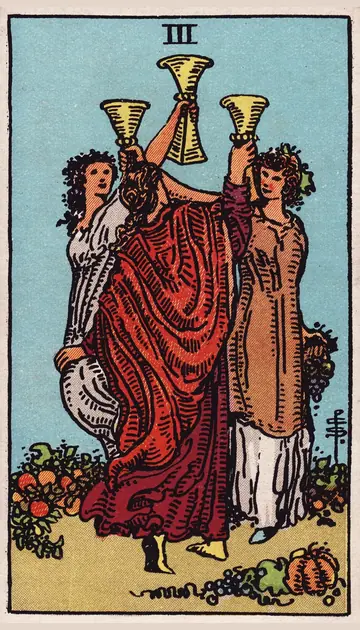

正位置カップの3の正位置
キーワード：喜び・仲間・お祝い
恋愛
楽しい出会いや、にぎやかな時間が期待できる時です。
相手の気持ちあなたといると、楽しくて自然体でいられると感じているようです。
この先友だちの紹介や集まりから、恋が始まりそうです。
アドバイス友だちの集まりに、積極的に参加してみましょう。
気をつけること楽しさに流されて、大切な人を後回しにしないように。
この先友だちの紹介や集まりから、恋が始まりそうです。
アドバイス友だちの集まりに、積極的に参加してみましょう。
気をつけること楽しさに流されて、大切な人を後回しにしないように。
人間関係
仲間と喜びを分かち合える時です。
相手の気持ちあなたと、もっと仲良くなりたいと感じているようです。
この先仲間の輪が広がりそうです。
アドバイスみんなで楽しめる計画を立ててみましょう。
気をつけること内輪のノリで、誰かを置いていかないように。
この先仲間の輪が広がりそうです。
アドバイスみんなで楽しめる計画を立ててみましょう。
気をつけること内輪のノリで、誰かを置いていかないように。
仕事・学業
チームで協力し、成果を喜び合える時期です。
この先チームワークで、良い成果が出そうです。
アドバイスチームの成果を、みんなで祝いましょう。
気をつけること楽しさを優先して、作業が遅れないように。
アドバイスチームの成果を、みんなで祝いましょう。
気をつけること楽しさを優先して、作業が遅れないように。
お金
楽しいことに、お金を使える時です。
この先楽しい出費が、良い思い出になりそうです。
アドバイスみんなで楽しめることに、使いましょう。
気をつけること楽しさにまかせて、使いすぎないように。
アドバイスみんなで楽しめることに、使いましょう。
気をつけること楽しさにまかせて、使いすぎないように。
生活
人と過ごす時間が、暮らしを明るくする時です。
この先楽しいお誘いがありそうです。
アドバイス友だちと、食事や遊びに出かけましょう。
気をつけること予定を入れすぎて、疲れないように。
アドバイス友だちと、食事や遊びに出かけましょう。
気をつけること予定を入れすぎて、疲れないように。
今日の運勢
友だちと楽しく過ごせる日です。
この先楽しいお誘いがありそうです。
アドバイス気の合う人を誘って出かけましょう。
気をつけること食べすぎや飲みすぎに気をつけて。
アドバイス気の合う人を誘って出かけましょう。
気をつけること食べすぎや飲みすぎに気をつけて。
逆位置カップの3の逆位置
キーワード：付き合い疲れ・あいまいな関係・遊びすぎ
恋愛
誰かの存在が、気持ちを揺らしやすい時です。
相手の気持ちあなたとの関係を、友だち以上にするか決めかねているようです。
この先大切な人がはっきりすれば、関係が落ち着きそうです。
アドバイス自分にとって大切な人を、はっきりさせましょう。
気をつけることあいまいな関係を、続けすぎないように。
この先大切な人がはっきりすれば、関係が落ち着きそうです。
アドバイス自分にとって大切な人を、はっきりさせましょう。
気をつけることあいまいな関係を、続けすぎないように。
人間関係
付き合いに、疲れを感じやすい時です。
相手の気持ちあなたとの付き合い方に、少し迷っているようです。
この先本当に気の合う人が残りそうです。
アドバイス付き合いは、無理のない範囲にしましょう。
気をつけることうわさ話に加わらないように。
この先本当に気の合う人が残りそうです。
アドバイス付き合いは、無理のない範囲にしましょう。
気をつけることうわさ話に加わらないように。
仕事・学業
仲間内の雰囲気に、流されやすい時期です。
この先メリハリをつければ、成果につながりそうです。
アドバイス仕事と遊びのメリハリをつけましょう。
気をつけること仲間との付き合いで、仕事がおろそかにならないように。
アドバイス仕事と遊びのメリハリをつけましょう。
気をつけること仲間との付き合いで、仕事がおろそかにならないように。
お金
交際費が、ふくらみやすい時です。
この先見直せば、落ち着きそうです。
アドバイス付き合いの予算を、決めておきましょう。
気をつけること断れずに、出費を重ねないように。
アドバイス付き合いの予算を、決めておきましょう。
気をつけること断れずに、出費を重ねないように。
生活
付き合いが多くて、暮らしが乱れやすい時です。
この先休めば、また楽しめそうです。
アドバイス一人でゆっくりする日を、つくりましょう。
気をつけること誘いを全部受けないように。
アドバイス一人でゆっくりする日を、つくりましょう。
気をつけること誘いを全部受けないように。
今日の運勢
遊びすぎて、疲れが出やすい日です。
この先休めば、また楽しめそうです。
アドバイス一人の時間も、大切にしましょう。
気をつけること誘いを全部受けないように。
アドバイス一人の時間も、大切にしましょう。
気をつけること誘いを全部受けないように。
このページの文章は、アプリ「ひとやすみタロット」の結果に使っている文章です。アプリでは、あなたの相談や、カードが出た位置（今の状況・これからの流れ・アドバイス）に合わせて、この中から文章を選びます。逆位置の読み方は逆位置のことをご覧ください。
「カップの3」が出たら、あなたの相談ではどう読む？
アプリでは、質問への答えに合わせて、カードの言葉をあなたの相談に合わせて届けます。
Android 対応・会員登録なし